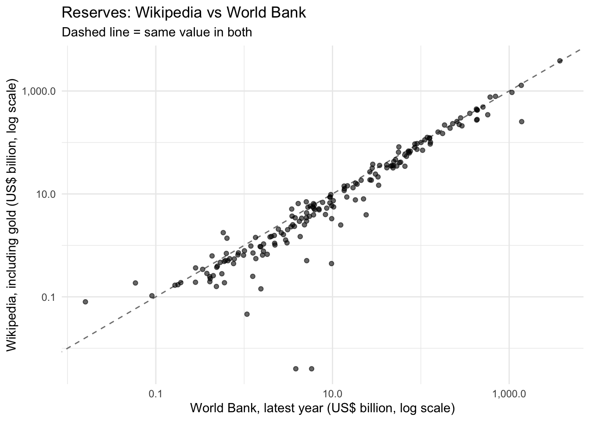

This page scrapes a practice site and two Wikipedia tables with rvest, cleans the foreign-exchange reserves table, and compares it with the same numbers from the World Bank API. It ends with a one-page plan for collecting web data for my own research. Answers are labeled with the question numbers from the assignment.
Show code
library(rvest)library(dplyr)library(stringr)library(readr)library(purrr)library(ggplot2)library(knitr)options(HTTPUserAgent ="EPPS 6302 class assignment (UT Dallas)")# save each page once, then read the saved copydir <-"data/webscrape"dir.create(dir, showWarnings =FALSE, recursive =TRUE)fetch <-function(url, file) { path <-file.path(dir, file)if (!file.exists(path)) {stopifnot(robotstxt::paths_allowed(url)) # check robots.txt firstdownload.file(url, path, quiet =TRUE)Sys.sleep(2) # pause between requests }read_html(path)}books_urls <-paste0("https://books.toscrape.com/catalogue/page-", 1:5, ".html")wiki_url <-"https://en.wikipedia.org/wiki/List_of_countries_by_foreign-exchange_reserves"coffee_url <-"https://en.wikipedia.org/wiki/List_of_countries_by_coffee_production"
0. Permission
I checked each path with robotstxt::paths_allowed() before the first request. fetch() also runs this check before every download.
All three are allowed. Wikipedia’s robots.txt blocks some crawlers and internal pages, but not articles. books.toscrape.com has no robots.txt (it returns 404), so nothing is restricted, and the site was built for scraping practice.
1. Warm up on books.toscrape.com
1a. First page
This is the first block of rvest_wiki01.R: title, price and rating for the 20 books on page 1. The only change is that the page is read through fetch().
That gives 100 books across 5 pages, with prices from £10.16 to £58.11 and a mean rating of 2.93 stars.
Show code
kable(head(books5, 10))
page
title
price
rating
1
A Light in the Attic
51.77
3
1
Tipping the Velvet
53.74
1
1
Soumission
50.10
1
1
Sharp Objects
47.82
4
1
Sapiens: A Brief History of Humankind
54.23
5
1
The Requiem Red
22.65
1
1
The Dirty Little Secrets of Getting Your Dream Job
33.34
4
1
The Coming Woman: A Novel Based on the Life of the Infamous Feminist, Victoria Woodhull
17.93
3
1
The Boys in the Boat: Nine Americans and Their Epic Quest for Gold at the 1936 Berlin Olympics
22.60
4
1
The Black Maria
52.15
1
2. The Wikipedia table
2a. Foreign-exchange reserves
The page has 2 tables with the wikitable class: the reserves list (about 200 rows) and a quarterly currency breakdown. In the reserves table, the first two rows are not countries. The header takes up three rows, and html_table() only uses the first as column names.
Show code
wiki_pg <-fetch(wiki_url, "wiki_fx_reserves.html")tabs <- wiki_pg |>html_elements("table.wikitable")# look at every table before picking onetabs |>html_table() |>map(dim) |>map_dfr(\(d) tibble(rows = d[1], columns = d[2])) |>mutate(table =row_number(), .before =1) |>kable()
I pointed the program at the list of countries by coffee production, since coffee is my research topic. Here is the clean-up step from rvest_wiki01.R, unchanged, run on both pages:
Error in `filter()`:
ℹ In argument: `!str_detect(country_or_region, regex("total|world",
ignore_case = TRUE))`.
Caused by error:
! object 'country_or_region' not found
script_clean(coffee_raw)
Error in `filter()`:
ℹ In argument: `!str_detect(country_or_region, regex("total|world",
ignore_case = TRUE))`.
Caused by error:
! object 'country_or_region' not found
What broke:
The column name. The filter uses country_or_region. The reserves table now calls that column “Country (as recognized by the UN)” and the coffee table calls it “Country”, so the code fails on both pages. Any header edit on Wikipedia breaks the script.
The table layout. My reserves cleaning in 2c names eight columns. The coffee table has two (country and tonnes), so that code fails on it too. Each table needs its own cleaning.
The World row. The coffee table starts with a World total, so the Total/World filter matters here. On the reserves page it removes nothing.
What did not break:tabs[[1]] was the right table on both pages. That was luck, since the code takes the first table without checking.
The coffee table cleaned for its own layout (FAO production for 2023, per the table caption):
That leaves 37 producing countries after the World row is removed.
2c. Cleaning the reserves table
clean_text <-function(x) { x |>str_replace_all("[\u2009\u202f\u00a0]", " ") |># thin and non-breaking spacesstr_remove_all("\\[.*?\\]") |># footnote markers like [1] or [note 2]str_remove_all("\\*") |># the * the page adds after some namesstr_squish()}reserves <- reserves_raw |># (ii) header spans three rows: set names, drop the two extra rowsset_names(c("country", "continent", "incl_gold_musd", "incl_gold_change","excl_gold_musd", "excl_gold_change", "last_reported", "ref")) |>filter(!country %in%names(reserves_raw)) |>mutate(across(everything(), clean_text)) |># (ii) any Total or World rowfilter(!str_detect(country, regex("total|world", ignore_case =TRUE))) |># (ii) drop the ref and change columnsselect(-ref, -incl_gold_change, -excl_gold_change) |>mutate(across(ends_with("_musd"), parse_number),# (i) dates come in several formats: "1 Mar 2024", "11 Sept 2026", "12 JUN 2026"date_text = last_reported,last_reported = lubridate::dmy(str_replace(last_reported, "\\bSept\\b", "Sep"), quiet =TRUE))
Show code
check <-tibble(step =c("Rows from html_table()", "Header rows dropped", "Total or World rows dropped","Country rows left", "Footnote markers [n] found in cells","Thin or non-breaking spaces found in cells", "Dates that did not parse"),n =c(nrow(reserves_raw),sum(reserves_raw[[1]] %in%names(reserves_raw)),sum(str_detect(clean_text(reserves_raw[[1]]), regex("total|world", ignore_case =TRUE))),nrow(reserves),sum(str_detect(unlist(reserves_raw[, 1:7]), "\\[.*?\\]")),sum(str_detect(unlist(reserves_raw[, 1:7]), "[\u2009\u202f\u00a0]")),sum(is.na(reserves$last_reported))))kable(check)
step
n
Rows from html_table()
198
Header rows dropped
2
Total or World rows dropped
0
Country rows left
196
Footnote markers [n] found in cells
0
Thin or non-breaking spaces found in cells
0
Dates that did not parse
1
This version of the page has no footnote markers or thin spaces in the cells, and no Total or World row. Footnotes now sit in their own Ref. column, which I dropped. I kept the filters anyway, since a later edit could bring these back.
The date that would not parse is “31 Apr 2024” for Albania, which is not a real date since April has 30 days. I left it missing rather than guess what the editor meant.
Show code
reserves |>count(year = lubridate::year(last_reported), name ="countries") |>kable()
year
countries
2024
168
2025
6
2026
21
NA
1
The “excluding gold” column is blank for 154 of the 196 countries, because Wikipedia shows “N/a” there. So I use “including gold”, which is filled in for every country and is also what the World Bank reports.
The “last reported” dates run from March 2024 to September 2026, so the table compares countries at different points in time.
wdi_file <-file.path(dir, "wdi_FI.RES.TOTL.CD.rds")if (!file.exists(wdi_file)) { reserves_api <- WDI::WDI(indicator ="FI.RES.TOTL.CD", start =2015, end =2025, extra =TRUE)saveRDS(reserves_api, wdi_file)}reserves_api <-readRDS(wdi_file)
Show code
# countries only, latest year with datawb <- reserves_api |>filter(region !="Aggregates", !is.na(FI.RES.TOTL.CD)) |>group_by(iso3c) |>slice_max(year, n =1) |>ungroup() |>transmute(iso3c, wb_country = country, wb_year = year,wb_musd = FI.RES.TOTL.CD /1e6, lastupdated)wb |>count(wb_year, name ="countries") |>kable()
wb_year
countries
2017
2
2018
1
2019
1
2020
2
2021
2
2022
1
2023
4
2024
40
2025
124
The World Bank series was last updated on 2026-07-13. Its latest year is 2025, and each value is the amount held at the end of that year.
3b. Comparing the two
Country names differ between the two sources (“Russia” and “Russian Federation”, “South Korea” and “Korea, Rep.”), so I matched them by country code, using the World Bank’s country list and a short list of names it spells differently.
Show code
wb_names <- reserves_api |>distinct(country, iso3c) |>filter(iso3c !="")fix <-c("Russia"="RUS", "South Korea"="KOR", "Turkey"="TUR", "Iran"="IRN","Egypt"="EGY", "Venezuela"="VEN", "Vietnam"="VNM", "Syria"="SYR","Laos"="LAO", "Slovakia"="SVK", "Kyrgyzstan"="KGZ", "Yemen"="YEM","Gambia"="GMB", "The Gambia"="GMB", "Bahamas"="BHS", "The Bahamas"="BHS","Hong Kong"="HKG", "Macau"="MAC", "Macao"="MAC", "Brunei"="BRN","Czech Republic"="CZE", "Czechia"="CZE", "Ivory Coast"="CIV","Cape Verde"="CPV", "Republic of the Congo"="COG","Democratic Republic of the Congo"="COD", "DR Congo"="COD","North Korea"="PRK", "Micronesia"="FSM", "Federated States of Micronesia"="FSM", "Saint Lucia"="LCA","Saint Kitts and Nevis"="KNA", "Saint Vincent and the Grenadines"="VCT","Palestine"="PSE", "State of Palestine"="PSE", "Kosovo"="XKX","Curaçao"="CUW", "East Timor"="TLS", "Timor-Leste"="TLS","São Tomé and Príncipe"="STP", "Sao Tome and Principe"="STP","Eswatini"="SWZ", "Turkmenistan"="TKM", "Somalia"="SOM")compare <- reserves |>mutate(iso3c =coalesce(unname(fix[country]), wb_names$iso3c[match(country, wb_names$country)])) |>full_join(wb, by ="iso3c") |>mutate(diff_pct =100* (incl_gold_musd - wb_musd) / wb_musd)only_wiki <- compare |>filter(is.na(wb_musd), !is.na(incl_gold_musd))only_wb <- compare |>filter(is.na(incl_gold_musd), !is.na(wb_musd))both <- compare |>filter(!is.na(incl_gold_musd), !is.na(wb_musd))
176 countries are in both sources. 20 are only on Wikipedia and 1 is only in the World Bank data. For the World Bank I used each country’s latest year with data.
Show code
ggplot(both, aes(wb_musd /1e3, incl_gold_musd /1e3)) +geom_abline(linetype ="dashed", colour ="grey50") +geom_point(alpha =0.6) +scale_x_log10(labels = scales::comma) +scale_y_log10(labels = scales::comma) +labs(x ="World Bank, latest year (US$ billion, log scale)",y ="Wikipedia, including gold (US$ billion, log scale)",title ="Reserves: Wikipedia vs World Bank",subtitle ="Dashed line = same value in both") +theme_minimal()

Show code
agree <- both |>summarise(within5 =mean(abs(diff_pct) <=5), within20 =mean(abs(diff_pct) <=20))
Only 15% of the matched countries are within 5% of each other, and 41% are within 20%. The largest gaps:
Which differ, and why. The largest holders mostly agree (China, South Korea, Singapore, Brazil and Saudi Arabia are within 4%), but many smaller countries do not. The gaps have five causes:
Different dates. 149 of the 196 Wikipedia rows have not been updated since March 2024, while the World Bank value is mostly for the end of 2025. For Bolivia, Gabon and South Sudan, the Wikipedia numbers are close to their World Bank values for 2023, but their reserves fell sharply after that. Some World Bank series also stop early (Hong Kong after 2023, Afghanistan after 2020).
Gold valuation. The United States is 82% lower on Wikipedia. Its “including gold” figure is only about US$11 billion above “excluding gold”, which is US gold valued at the old official price of $42.22 an ounce. The World Bank uses the market price, which adds over US$1 trillion.
Coverage. The World Bank does not report Taiwan separately. Benin, Burkina Faso, Ivory Coast, Guinea-Bissau, Mali, Niger, Senegal and Togo share one central bank (the BCEAO), which holds their reserves together, so there is no World Bank figure for each country. Iran, North Korea, Cuba, Syria, Turkmenistan, Somalia, Andorra, Curaçao and Kiribati have no World Bank value for these years, and Vatican City and Montserrat are not in the World Bank’s country list.
Units. Mozambique and North Macedonia show 4 (US$ million) on Wikipedia but several billion at the World Bank. That looks like a number in billions entered in the millions column.
No checks. Nothing on Wikipedia checks the entries. “31 Apr 2024” and the unit errors are the mistakes visible here, and there is no way to tell how many others there are.
Which vintage. The World Bank numbers are end-of-year values, mostly for 2025, from the release updated on 2026-07-13. The Wikipedia numbers are from the page as I downloaded it on October 5, 2026, with reporting dates from March 2024 to September 2026. Scraping the page again next month could give different numbers, with no record of what changed.
3c. When is scraping the right tool?
Scraping is the right tool when the data is only published on a web page, with no API or download, and the site’s robots.txt and terms of service allow it. When the same numbers are available from an API or an official file, as the reserves are from the World Bank, use that instead, because it is documented, versioned and gives everyone the same answer.
4. Data plan
My research looks at how the timing of my coffee intake relates to my daily focus, using my own coffee log and a writing-time tracker. Web data gives an outside comparison: when people in the US search for coffee, by hour and day of the week. This shows whether my pattern matches the general one.
a. Source. Google Trends search interest for “coffee” in the US: hourly values for each 7-day window and daily values for the same three months as my logs. I chose it because it is the only free public source I found that shows coffee-related behavior by hour. The ICO and USDA publish coffee consumption only as yearly national totals, which cannot show a daily pattern. Coffee shop sales data would be closer to actual drinking, but it is not public.
b. robots.txt and Terms of Service. The robots.txt for trends.google.com blocks /explore? and /trends/api, which are the pages a scraper would request, including the gtrendsR package I used in Assignment 2. Google’s Terms of Service do not allow automated access that goes against robots.txt. So scraping Google Trends is not allowed, and I will not do it.
c. API. Google opened an official Trends API in July 2025, but only for approved applicants, and it gives daily, weekly, monthly or yearly data, not hourly. I will apply and use it for the daily series if I am approved. For the hourly data, and until then, I will use the “Download CSV” button on the Trends website. That is a person using the site, not a bot, so it follows robots.txt and the terms. Since I am not scraping, no justification is needed.
d. Volume, rate limiting and caching. About 13 hourly downloads (168 rows each) and one daily series over the three months, about 2,300 rows in total. Downloads are by hand, once a week, the same load as normal use. Google Trends returns a slightly different sample each time (Assignment 2 showed this), so I will save every file unchanged with the date in its name and log each download (search term, time window, download time). The analysis will only read the saved files.
e. What breaks, and how I will notice. Google can change the CSV layout (header lines or column names), how small values are shown (currently “<1”), or how the sample is drawn. A script will check each new file before I use it: the expected column names, 168 rows for a 7-day hourly file, values between 0 and 100 with a top value of 100, and dates that match the window I asked for. If a check fails, the script stops and names the file.